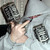

A Szamárköhögés nem mai film: 1987-ben került a mozik közönsége elé, a gorbacsovi glasznoszty szellemében. Nagy dolog volt ez akkoriban, egyáltalán megemlíteni 1956-ot. Már a teherautón utazó felkelők látványának puszta megjelenítése is merész volt, ezért ne is várjunk ennél többet. Nem is az utca életét, a hős vagy nem hős harcolók életét mutatja be, hanem egy zsidó család szemén át láttatja a történelmi kort. S ez az igazán bátor ebben a filmben: bemutatni a pesti zsidót, a maga őszinte természetességében, és azt, hogy itt voltak azok 1956-ban is, csak nem róluk szólt a történet.
A teszetosza papa - Garas Dezső - igazgató. Hol, miféle cégnél, az nem hangzik el, nem derül ki, de viselkedéséből kiderül: nem tehetsége miatt került pozícióba. Hatalmas, fényűző nagypolgári lakásban élnek, ami tudjuk, kiknek járt az ötvenes években. A mama - Hernádi Judit - nem dolgozik. Mi több, még cselédlányt is tartanak - Fehér Anna - aki "nagyságos úrnak" és "nagyságos asszonynak" szólítja gazdáit. Polcukon Sztálin összes művei sorakoznak, s van két gyermekük, a tíz év körüli Tomi - Tóth Marcell - és a hároméves-forma Annamari - Kárász Eszter. Családnevük nem derül ki a filmből, de aki nem olvasta ki a sorok közül, annak nem is való ez a film. Aki nem érti a hátteret, unatkozni fog, nem látja meg a cselekményt nyomokban sem. Pedig van. Az a cselekmény, hogy nincs cselekmény.
1956-ban ugyanis a zsidók nem csináltak semmit. Ez a család sem tesz semmi mást, mint rémülten pislog, nem érti, mi ez a balhé, kik lövöldöznek, és mi történt megszokott, békés világukkal. Nem ártottak ők soha senkinek, nekik természetes, hogy itt laknak, apu igazgató és nekik ez jár. Hogy miért jár? Nem is gondoltak bele sose. Rettegnek attól, hogy "jönnek" majd értük - de kik és miért? Nincs kimondva, lehet bármelyik oldal. Az igazgató úr hol az ablakon való menekülést gyakorolja a szomszédokkal, mert úgy tudják, először mindig a férfiakat viszik el, hol az éjszaka közepén állnak neki elégetni Sztálin összes műveit, nehogy az hozzon bajt az egész házra. A papa levelet próbál írni Hruscsovnak és Eisenhowernek, de hogy miről, maga sem tudja. Azt sem, írhat-e ő levelet ilyen magas helyre vagy sem. Anyu terelgeti a két gyereket, akik persze normális gyermeki életüket élik: Annamari bepisil, rosszalkodik, továbbá szamárköhögés-gyanús. Tomi viszont épp most fedezi fel, hogy lassan férfivá érik. Közben bezár az iskola, ahová a pinceablakon Tomi és barátai rendszeresen beszöknek, és egy napon holtan találják az iskola ellenszenves pedellusát. Megölik az akvárium halait, ami egy elég értelmetlen jelenet. Mi szüksége volt a rendezőnek - Gárdos Péter - a céltalan állatkínzásra, az iskolai padokon tátogó halak perceken át való mutogatására - nem tudni. De lehet, hogy ő maga is zsidó.
1956-ból aztán végül nem lesz semmi. Az iskola újrakezdődik novemberben, bár a fél osztály eltűnik, és a család otthon marad, és nem emigrálnak, hogy apu sztepptáncos legyen Caracasban. A szokatlan helyzetben csak a kissé őrült nagymama (Törőcsik Mari) őrzi meg a hidegvérét, ő hoz kenyeret, amit átlőnek a kezében. Anyu pedig találkozik régi szerelmével, de végül nem jönnek össze újra. Minden visszatér a rendes kerékvágásba, és senki sem viszi el a zsidókat, csak apu kerül másik céghez. Tomi megfogja Fehér Anna mellét a fürdőkádban (akkor még volt neki), és később férfivá érik. A zsidók pedig pislogva nézik tovább a történelmet, és fogalmuk sincs róla, hogy épp kimaradnak egy nemzet életéből. De nem is érdekli őket, megvan a maguk baja.
Aki egyféle karatkert tud csak "eljátszani" azt miért lehet nevezni színésznőnek? És miért is érdemel bármiféle díjat? Érdemes művész meg hasonlók... bár végül is nincs megnevezve, hogy mire érdemes:):) Ezentúl az ilyeneknek javaslom a "semmire sem érdemes művész" díjat adni. Ez igaz pl. Alföldi Róbertre aki már minden volt lassan, csak akasztott ember nem. (sajnos) Egyébként is miért nem "coming outtol"? Az most amúgy is olyan "trendi"....
Még feltétlenül idesorolnám Bajor Imre hihetetlenül "sokarcú" "színészünket" is, de még sorolhatnám tovább. De elég csak megnézni a Heti Retkes stáblistáján szereplő vendégeket. (direkt nem azt írtam, hogy nézzünk meg egy részt ebből a szennyből :) )
Ha én is "olyan" származású lennék, akkor én is kaphatnék ilyen díjakat és szerepelhetnék a heti retkesben?? :)
Nem volt kéznél macska amit vízbefolythatott volna...
A víz igaz, hogy folyik, de a vízbe fojtanak.
12. warhamster (40.000) -A rendszerből kizárva!
2007-10-22 20:24:17
fehér annának akkor sem volt melle. ellenben kiválóan be tudott parkolni a busz a fogai közötti résbe.
11. Ylmor
2007-10-22 19:48:21
Jákosi Mátyás kispajtás!
10. sen kisem
2007-10-22 17:56:29
Az én olvasatomban ez kritika a babóknak, hogy foggalmuk sincs miről pofázak,de pofáznak, mert őket el akarják vinni. Vigyék, szóljanak, ha kell segíteni:). Szokásos droid baromság, hogy ők írnak levelet Hruscsovnak, meg ejzenhóvernek, de hogy miért azt ők se tudják.
Kéne csinálni filmet a mostani eseményekről, a szegény babók szemszögéből, hogy legyen. Éppen irtják a népet, meg megveszik az országot, és csodállkoznak hogy utállják őket.
9. Mein Führer
2007-10-22 17:50:10

Még nem volt orkozás :)), ezért megjegyzem, hogy Kárász Eszter meg az. De ez lényegtelen. :)
8. ahus -A rendszerből kizárva!
2007-10-22 16:03:51
Ez bénaság? Hisz - úgy tűnik - hiteles. És ha ma, 2007-ben csinálnának egy ilyen filmet, "rasszistaantiszemita" bélyeget kapna a 18-as karika mellé. Nem rossz ez. Fricska a babóknak, babóktól.
7. Szecső
2007-10-22 15:33:56
"Mi szüksége volt a rendezőnek - Gárdos Péter - a céltalan állatkínzásra, az iskolai padokon tátogó halak perceken át való mutogatására"
Nem volt kéznél macska amit vízbefolythatott volna...
6. Szecső
2007-10-22 15:28:54
"hogy itt voltak azok 1956-ban is, csak nem róluk szólt a történet."
Hanem a börtönökből kitörő nyilas csőcselékről, akik házról-házra járták Budapestet babókra vadászva? Ja nem, az másik történet. Havas történet... Fantáziasztori.
5. Yasukuni
2007-10-22 13:46:12
Mindíg is felspanolt mikor a Hernádi belenézett a kamerába azzal a Derrick-es sas tekintetével.
Mikor kap Jászai Mari díjat a magyar anyáknak krónikus tespedést mutató színészi alakításáááááááééééért?